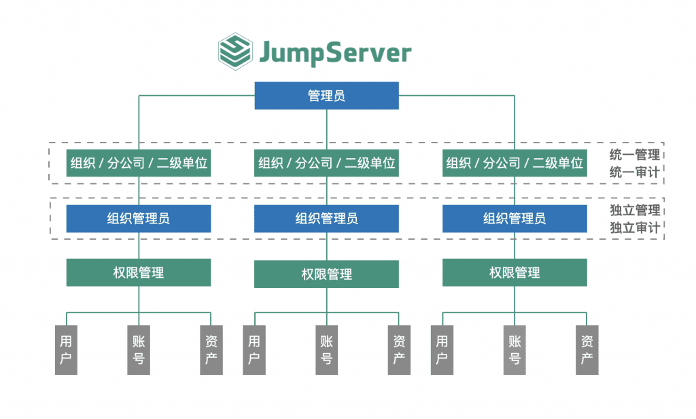

编者注：在2022年8月20日举办的“2022 JumpServer开源堡垒机城市遇见· 武汉站”活动中，中南民族大学高杰欣老师分享了题为《”安全稳定规范“的技术看护人——JumpServer在中南民族大学的运用》的主题演讲。以下内容根据本次演讲整理而成。
中南民族大学是直属于国家民族事务委员会的综合性普通高等学校，坐落在武汉南湖之滨。学校创建于1951年，是新中国成立后最早建立的民族高校之一。目前，中南民族大学共有56个民族的全日制博士、硕士、本科、预科等各类学生29000余人。
高杰欣老师供职于中南民族大学现代教育技术中心信息服务部，负责数据中心、计算平台、存储平台、数据库、信息安全、网络建设等领域的工作，出版了《跟着开源系统部署学运维——用开源构建信息化应用》一书，在信息安全领域拥有丰富的经验。作为一位资深的开源爱好者，高杰欣是在网上偶然发现了JumpServer开源堡垒机，后来成为深度使用的忠实用户。
信息化规模与运维的迫切性
中南民族大学的数字化校园建设起步于“十二五”期间，距今有十余年的时间，陆续建设了数据中心、核心校园网络、软件平台、云基础设施等。
按照”大平台、中系统、微应用“的应用建设模式，中南民族大学实现了从无到有的校园信息化建设，搭建了多个高校应用的垂直系统。随着学校信息化规模的不断扩张，催生出了很多运维管理的问题。
学校拥有数量众多的大平台、中系统以及很多的微应用，面对不同的垂直管理和用户信息素养，我们所面临的运维问题是非常繁琐和复杂的。
与大多数的企业用户类似，学校很多的应用系统是由第三方公司进行承建的。高校的信息化部门主要管理的是大平台以及基础设施，所有的应用系统则主要由各个业务部门进行建设和管理。业务部门的人员对于应用的维护能力十分薄弱，基本上没有人能够独立承担技术方面的运维。面对如此众多的应用系统，管理起来十分痛苦。
基础设施方面，学校也大量应用了各种开源平台，比如使用JumpServer进行安全运维，使用Nginx进行网站发布及负载均衡，使用VSFTP进行文件服务，使用Shibboleth进行身份认证集成等。我们使用开源的工具来进行整个基础设施的运行和维护，整体运维的环境比较复杂。
为什么需要审计？
高校信息化体系的规模化运营需要具有高效的运维机制，作为管理者我们必须对用户的操作行为进行审计，主要原因有以下两点：
■ 技术约束
虽然我们制定了很多运维规范制度，但是这些规范制度对于一些第三方的服务公司而言基本上毫无约束力。尽管我们对于每一个运维的细节（包括Windows系统和Linux系统）都有非常详细的描述，但是很少人会去查看和遵循这些运维的规范和制度，甚至有很多工程师还会使用一些“rm -f”这样的高危命令，导致系统事故的发生，这种情况屡禁不止。
同时，第三方人员的管控也比较困难，经常会出现人员变更所导致的没有进行有效的运维交接和制度传递，重复性的培训浪费了我们大量的时间和精力。因此，我们需要审计来进行技术约束，保证系统的安全和规范，有效落实运维规范制度，限制用户的高危操作行为，严格控制用户访问，有效开展第三方人员管理和控制运维时间，提升运维效率。
■ 用户体验
学校里面很多业务部门的老师对技术不太了解，每当有问题出现都会先来问IT部门，比如找不到入口、找不到插件和客户端、网络中断等问题，这其中也存在一些不遵守运维规范的狡辩。因此，对用户的操作行为进行审计对于提高用户体验和效率也是至关重要的。
堡垒机的选型过程
面对以上的痛点和运维审计的需求，我们也花了不少精力去市面上寻找堡垒机的方案，并进行测试试用，经历了一个比较艰难的选型过程。关于堡垒机的选型，我们主要关注的是以下几点：
1. 功能操作体验
市面上的堡垒机在功能上都大同小异，但是深度使用之后会发现在实际操作过程中的细节和体验相差是很大的。有些是限制性的条件不同，有些是达到的效果不同，因此实际使用下来的用户体验是十分重要的一个方面；
2. 专用的客户端插件
有的堡垒机使用的是浏览器插件，而谷歌、火狐这类浏览器一般都更新得比较快，这样一来，就会经常发生浏览器插件更新而跟堡垒机无法适配的情况，导致连接不上客户端。还有一些厂家的堡垒机对运维的客户端也有限制，严格限制其版本，需要使用没有补丁的客户端，这无疑会造成非常大的安全隐患。
因此，我们要求堡垒机要有独立的安装程序与操作系统相适配，并且有专用的浏览器插件与其兼容，运维的客户端程序和版本也要与专用客户端相适配；
3. 产品授权方式
市场上的各类堡垒机厂家的授权方式也有所不同。有些是按授权对象类型出售硬件设备，有些是按资产数量进行软件授权，还有一些厂家会按照集群模式授权高可用部署的License。所以我们也要根据实际的资产情况和需求来选用比较合适的产品授权方式；
4. 更新迭代速度
IT技术总是在不断地更新和进步，我们所使用的很多应用和组件也经常在更新。有些堡垒机功能迭代保守，技术框架固化陈旧。我们遇到过有的堡垒机供应商说程序已经固定没法更改，但是让所有的运维行为都“服从”于堡垒机的版本限制显然是不现实的。
还有的堡垒机迭代周期很长，甚至是按年来更新的，这样很难适应快速迭代的IT系统环境，这种承诺可以理解为一种拖延。因此，堡垒机的更新迭代速度也是我们重点考察的一个因素；
5. 核心关注点
我们首要关注的就是堡垒机需要满足等保2.0规范的要求，并且能够提供相关的资质证明。其次，堡垒机自身的安全性和抗打击能力也十分重要。很多管理员喜欢把堡垒机“关在”内网，毕竟直接把众多的“鸡蛋”放在一个篮子里，这十分考验堡垒机产品自身的安全性。还有对权限控制颗粒度的要求，高校的权限管控十分分散，因此堡垒机对权限配置的集权和分权需要满足一定的弹性和颗粒度，实现更细分化的权限配置。
综合以上几个维度，我们认为JumpServer堡垒机基本上能够满足我们的实际需求，并最终选用了JumpServer堡垒机。
JumpServer的部署架构
中南民族大学采用的是“双主机”部署方案，将两套JumpServer分别部署在两个机房，取消所有传统入口，结合高可用的特性，采用一个VIP入口，实现了“双主机、双机房、单入口”的部署模式。
应急情况下更需要进行运维审计，“双主机”的部署方案能够确保无论何时单边机房或者单台设备出现了问题，都能够正常进行运维和审计。同时，这样的部署方式取消了所有的传统入口，达到了严管、严控远程访问行为的目的，有效提高了系统的安全性。
另外，针对关键、普通或者临时的多运维类型，我们也结合了JumpServer企业版和开源版两种方案，搭建了多个JumpServer的环境来满足不同的安全需求和安全位置的运维。
比较典型的场景就是学生实验环境入口。学生做实验使用的是Linux的VNC或Windows桌面，传统场景是一人一台PC机，而我们全部采用虚拟机，批量给学生开放并用JumpServer作为实验环境入口，免去了VNC和RDP客户端。

JumpServer的实践应用
部署JumpServer之后，我们也经过了一段时间的磨合和适应，期间也遇到了一些管控问题，总结了一些运维心得想跟大家分享一下：
■ 管控痛点
1. 基于Web的运维界面
在使用JumpServer之前，我们使用的是一套比较适合高校的Web VPN系统，主要用来进入信息系统以及访问知网数据库、学科信息等。通过Web VPN来实现普通页面的访问需求，的确具有一定的开放性。但作为运维人员，我们需要管理防火墙、WAF、WebLogic等外部界面，而Web VPN做不到对这些应用账号的管理，我们也不希望关键资产的应用账号密码被外部人员知道，存在一定的安全隐患；
2. 基于客户端的运维界面
为了统一规范以及控制权限，对PL/SQL、SOL Server等数据库的维护工作我们希望能够通过H5页面进行。另外，同一个共享的客户端通过RemoteApp可以访问同一个IP的多个不同账号，账号密码会记忆在客户端上。这种情况下，用户的操作行为依然是比较难以管控的；
3. RemoteApp的安全隐患
RemoteApp是JumpServer中基于微软的一套终端服务架构，在实际使用时存在一定的安全隐患。我们通过RemoteApp开放了数据中心重要的运维端口，这样一来，同一个共享的RDP可以访问所有运维对象的端口。如果JumpServer出现问题，那么就会对系统的安全性造成很大的影响。
除此之外，RDP共用账号还会有文件泄漏的危险，RDP独立账号也可能会导致大量的垃圾文件，并且存在一定的泄漏风险。这种情况就超出了JumpServer的监管范围，需要管理员从更高的层面进行审视和管控；
4. 运维人员的操作恶习
在平时运维操作的人员中，有很多人员在进行运维修改、删除等操作的时候从不汇报和沟通，随意进行操作，还会临时修改和变更信息却不进行还原，也不承认是自己操作的，类似这些的运维操作恶习无疑会带来非常大的安全隐患。
在等保、护网要求越来越高的情况下，我们需要通过JumpServer的一些手段来解决这些管控痛点。
我们通过设置Proxy代理服务器来限制RemoteApp访问的运维对象和运维端口，以确保用户在通过JumpServer启用RemoteApp访问的位置都在管理员的控制之下。我们还设置了一套脚本机制，也就是流量控制策略，控制用户只能访问某个目的IP和端口，也在很大程度上提高了系统访问的安全性。
除此之外，通过JumpServer本身的AutoHotkey组件可以进行自动登录的设置，启动RemoteApp时，自动运行AutoHotkey脚本。这样一来，用户就无法对客户端登录界面进行操作，避免用户自行选填和记住密码，进一步限制了用户的变更行为，提高了安全性。
■ 运维心得
作为JumpServer的长期用户，结合我们在高校信息系统运维的实际工作经验，我们也收获了一些心得：
1. 审计高可用
越有故障就越需要运维，越是抢修情况越需要审计。我们需要对用户的所有操作行为进行记录和审计，以便发生故障后进行分析和查找原因，并对一些用户的恶性行为追溯定责。在技术层面，通过“双主双活”互为冗余的方式，确保网络的正常运行；
2. 管理主体
通过对技术领域划分来进行管辖范围的分隔，主要通过JumpServer的租户隔离功能来实现，分清责任和技术风格；
3. 拓展场景
除了关键设备、普通设备场景的运维，我们也对其他应用场景进行了拓展。比如学生实验环境入口场景，可以多建立几个开源环境，设置短期和临时业务的独立环境，拓展更多的使用场景；
4. 技术约束行为
由于通过制定运维条款对用户行为的约束力很低，因此我们需要通过技术来约束所有用户的运维操作行为，对所有的运维操作进行录屏录像，记录操作命令、文件传输作为审计依据。面对恶性操作、违规操作，通过录像回放功能就可以进行查证和追溯。同时，管理员或者审计员可以对操作进行实时监控，发现违规操作，立即切断，保障系统的安全运行。
JumpServer的亮点功能
随着对JumpServer堡垒机使用的深入，我们也发现了一些亮点功能，这里罗列如下：
1. 租户隔离
我们可以通过JumpServer的租户隔离功能实现分部门的资产和权限管理。关键IT资产的权限是由我们信息中心进行管理的，而对于像计算机学院、电信学院这些与计算机有大量交互的学院，他们也拥有自己的小机房和服务器，我们可以通过JumpServer把对应的管理权限下放。
这样一来，各学院的组织管理员就可以自主管理本学院的资产、用户和权限，满足了细颗粒度权限配置的要求；
2. 多因子认证
多因子认证功能也是我们经常使用的功能，主要是通过开启多因子认证来进行最高管理员的身份认证，保证最高管理员权限的安全控制；
3. 企业微信认证
JumpServer除了支持账号密码登录外，同样也支持企业微信、钉钉、飞书的扫码登录。其中，企业微信认证是我们经常使用的一种认证登录方式，通过企业微信登录JumpServer，一定程度上降低了密码暴露的风险；
4. Web页面运维
对于MySQL和PostgreSQL数据库的运维，我们尽可能使用H5界面进行运维，减少使用专门的客户端和RemoteApp；
5. 高危命令复核
管理员对用户的高危命令进行复核，一定程度上减少了一些无关的事务性以及急救的工作，确保了系统的安全性；
6. 资产管理及授权
通过JumpServer进行资产管理还是非常方便的，我们可以批量对资产树节点进行授权，授权方式很灵活，有效提高了运维管理工作的效率。
寄语
作为一个使用开源软件多年的技术爱好者，希望未来JumpServer能够持续发扬开源的精神，发展开源生态，用开源占领市场，服务更多的IT人；在功能演进方面，希望在未来JumpServer能够持续完善功能，实现更细粒度的功能以及开关化和交叉配置的能力。
作为一款重要的运维安全审计工具，JumpServer扮演的是“照妖镜”的角色。事实上，JumpServer作为技术人员业务运维和管理人员行为的工具和规范，希望在未来能够更好地管理人员的操作行为。
最后，希望JumpServer在坚持技术安全底线的同时，不断扩大开放。这也是开源最大的优点，开源软件使用人群规模巨大，也就更容易发现产品的问题，更快地去进行修正和改进。
希望JumpServer越来越好，服务更广泛的用户群体，提供更优秀的运维管理体验。